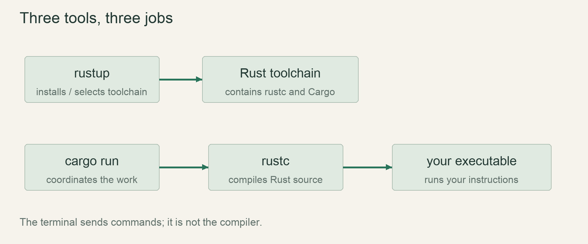

Start / First stepsLesson 02 of 100 · ~6 min reading + build time
Create and run the game package
Create game/, edit its source, and compile and run your own first Rust executable.
Previously: Install the Rust toolchain. Keep that working result available before starting this lesson.
Why we need this now
We now have tools, but tools are not a game. This lesson connects one text file to a running executable. That edit–save–build–run cycle is the foundation of every episode, so we will inspect the folders and output rather than treating cargo run as a magic incantation.
Your result: Create game/, edit its source, and compile and run your own first Rust executable.

01Create a package in the correct place
Start in Terminal at the rusty repository root. Check pwd and ls; you should recognize the course and docs folders. If you are elsewhere, use cd /Users/anujbarve/Documents/rusty on this Mac. Viewers must substitute their own checkout path. Then run cargo new game --vcs none. This creates a package called game without creating a nested Git repository.
If game/ already exists, stop and inspect it; do not delete or overwrite existing work. Enter the package with cd game. From now on, Cargo commands in these early lessons run here. The distinction matters: the repository root contains learning documents, while game/Cargo.toml identifies the executable package Cargo should build.
02Read the package before running it
Open Cargo.toml and src/main.rs in your editor. The manifest names the package, its version and Rust edition, followed by a dependencies section. Leave the edition generated by Cargo alone. The source file contains fn main(); for this small native executable, execution begins in that function. Its braces contain the body.
The generated println! call prints a line to the terminal. The exclamation mark identifies a macro invocation; you do not need to understand macro implementation yet. Change its string to the sandbox greeting below, then save the file. The terminal does not see unsaved editor buffers, so a visible edit in an editor is not yet proof that Cargo will compile it.
03Build, launch, and separate the kinds of output
Run cargo run. The first run normally prints Cargo messages such as Compiling, Finished and Running, followed by your program’s greeting. Cargo’s messages describe the build workflow; the greeting comes from your program. A later run with unchanged source may skip compilation. A changed source file causes the relevant build work to happen again.
The executable is placed under target/debug/ for the default development profile. On macOS/Linux, ./target/debug/game launches the already-built executable directly. Run it, then edit the greeting without rebuilding and launch that path again. It still prints the old greeting. This experiment makes the difference between source and compiled executable observable.
04Use the three everyday checks
Run cargo check, cargo fmt, and cargo run. Check asks whether the package passes compilation checking without producing the final runnable binary. Fmt rewrites formatting; it is not a correctness test. Run builds what is needed and launches the executable. We will add cargo test when we have behavior to verify.
Now remove one closing quote in the greeting and run check. Read the first diagnostic’s filename, line and message. Restore the quote and rerun. An error is feedback about a specific broken program, not a sign that your setup is ruined. In the video, leave this small failure visible: learning to navigate an error is more useful than presenting only flawless typing.
05The complete first-run terminal sequence
On your Mac, start at this repository path. Viewers should substitute their own checkout path. First check whether a game folder already exists; if so, inspect it rather than recreating it.
cd /Users/anujbarve/Documents/rusty
pwd
lsFor a new project, create and enter the package, then run the generated program:
cargo new game --vcs none
cd game
cargo runThe first program prints Hello, world!. Open src/main.rs, replace its contents with the worked source below and save it. Then run these commands from the same game/ folder:
cargo fmt
cargo check
cargo runThe final output now contains Our ecological sandbox begins here.. If it still prints the old greeting, confirm the edited file is saved and that the terminal is in the package containing that file. If Cargo says it cannot find Cargo.toml, check pwd and enter game/; do not reinstall Rust.
Read → predict → run → change
Walk through the working example
Complete focused example — src/main.rs
Download this worked example ↧
fn main() {
println!("Our ecological sandbox begins here.");
}Read what each part does
- fn main declares the entry function; parentheses contain its parameter list, empty here.
- The braces delimit statements in the function.
- The semicolon ends the println! statement.
Expected result
After cargo run, the program prints: Our ecological sandbox begins here. Cargo may also print build-status lines; exact timings and diagnostic formatting vary.Exact version numbers, paths and compiler wording may differ. Compare the behavior and file locations, not incidental output formatting.
Try the idea here
This is a bounded teaching model in your browser, not your Rust game and not a real terminal. It never executes shell commands or modifies project files.
Prediction · repair · transfer
Exercises you actually do
Write a prediction or make an attempt before opening a solution. Use the hint if stuck; then compare reasoning and verify with the stated check. A different implementation is fine when it satisfies the same contract.
Print a second line
Print the greeting and then Materials ready. on a second line.
Need a hint?
Each println! invocation emits its own line.
Worked solution
fn main() {
println!("Our ecological sandbox begins here.");
println!("Materials ready.");
}Save src/main.rs and run cargo run from game/. The order of calls determines the order of lines.
How to verify your result
Both lines appear in order after any Cargo build messages.
Compare build and run
Use cargo build, then launch the produced binary without cargo run.
Need a hint?
The default executable is inside target/debug.
Worked solution
cargo build
./target/debug/gameOn PowerShell the path is .\target\debug\game.exe. The direct launch does not rebuild source; that is why an edited greeting is not visible until a build occurs.
How to verify your result
You can predict whether a source edit appears before rebuilding.
Recover from the wrong directory
From the repository root, try cargo run and explain a missing-manifest error.
Need a hint?
Find the directory containing Cargo.toml.
Worked solution
Return to the package using cd game, or from the repository root use cargo run --manifest-path game/Cargo.toml. Do not create a second package just to hide the directory mistake.
How to verify your result
The same package launches and no duplicate project is created.
When it goes wrong
Start with the observed symptom. Change one assumption at a time instead of pasting fixes until the error disappears.
could not find Cargo.toml
What is happening: The terminal is outside the package directory.
Try this: Use pwd, locate game/Cargo.toml, then cd game or pass --manifest-path.
Output still shows the old greeting
What is happening: The file may be unsaved, a different package may be running, or you launched an old binary directly.
Try this: Save the exact src/main.rs, check pwd, then cargo run from game/.
An error mentions an unterminated string
What is happening: A quote was removed or replaced by typographic quotes.
Try this: Use ordinary double quotes around the text and read the first indicated source location.
Explain it without the example
If you edit the greeting but never rebuild or rerun, does the running executable change?
Reasoning to compare
No. Editing source does not rewrite an existing running executable. cargo run rebuilds changed source and launches the resulting program.
Self-check only: test a prediction or ask your tutor if anything still feels arbitrary.
For your YouTube series
Turn the lesson into an episode
Open with the problem or result
We now have tools, but tools are not a game. This lesson connects one text file to a running executable. That edit–save–build–run cycle is the foundation of every episode, so we will inspect the folders and output rather than treating cargo run as a magic incantation.
Teach in this order
- Create a package in the correct place
- Read the package before running it
- Build, launch, and separate the kinds of output
- Use the three everyday checks
Record this demonstration
Create game/, edit its source, and compile and run your own first Rust executable.
Close with what the viewer can now explain
Explain the result without reading the code, make one predicted change, then show the observed result.
A lesson can span several recordings. The episode beats are a teaching outline, not a claim that every viewer learns at the same speed.
Finish with evidence
The terminal prints your edited message. You can point to the source file and package manifest without searching.
Make one small variation without copying: predict it, run it and explain any difference. On another day, repeat one exercise from memory before starting the next lesson. Ask your tutor about any step you can execute but cannot explain.
This is an attempt marker, not a grade. Learning records are written only after demonstrated understanding.
Primary sources for this lesson
Use sources to verify the mechanism. The lesson itself supplies the instructions; the links are not a substitute for teaching them.